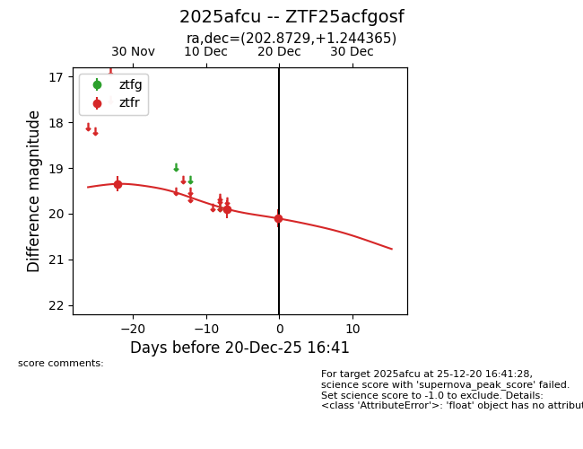
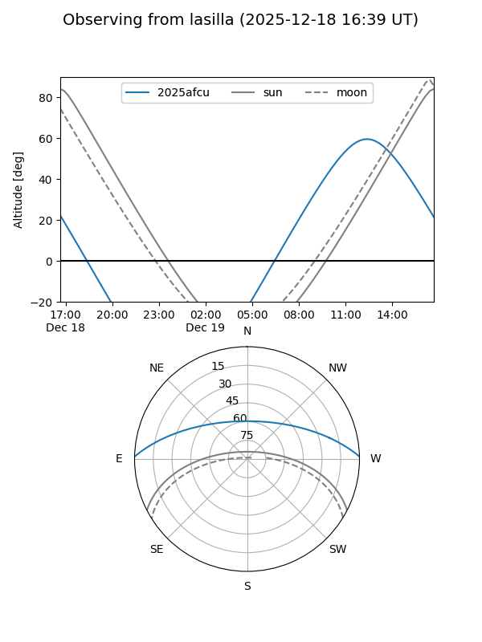
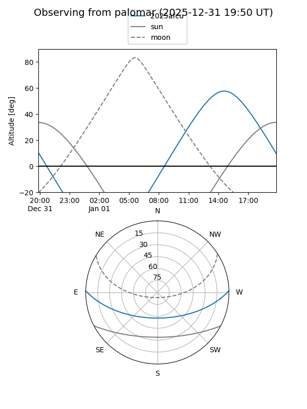
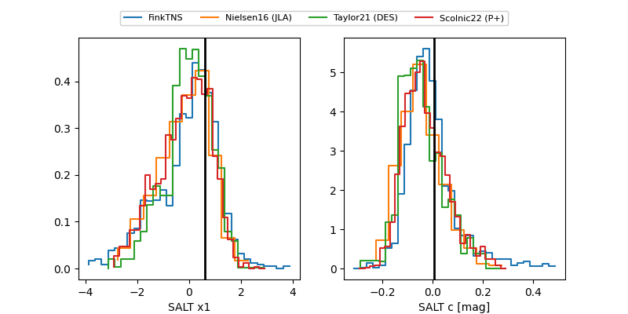

2025afcu
Target 2025afcu at 2025-12-21 15:02
Aliases and brokers:
FINK: fink-portal.org/ZTF25acfgosf
Lasair: lasair-ztf.lsst.ac.uk/objects/ZTF25acfgosf
ALeRCE: alerce.online/object/ZTF25acfgosf
TNS: wis-tns.org/object/2025afcu
YSE: ziggy.ucolick.org/yse/transient_detail/2025afcu
alt names
ZTF25acfgosf (ztf,fink_ztf)
2025afcu (tns,yse)
Coordinates:
equatorial (ra, dec) = 202.8729,+1.24437
equatorial (HMS+DMS) = 13:31:29.51,+01:14:39.71
galactic (l, b) = (324.9626,+62.39047)
Flags:
Photometry:
last ztfr=20.14
4 ztfr detections
Lightcurve

Visibility


Additional plots
